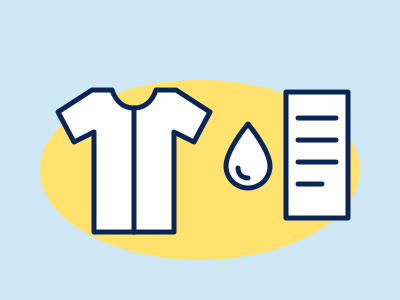
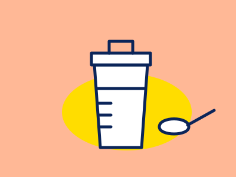

BODY
公開 2026.10.07 / 更新 2026.10.07
 SEASONAL / UK & JAPAN
公開 2026.09.27
公開 2026.09.13 / 更新 2026.09.29
SEASONAL / UK & JAPAN
公開 2026.09.27
公開 2026.09.13 / 更新 2026.09.29
ボディ・栄養
体臭・汗のしくみと毎日の手入れ、プロテインの種類と選び方、ビタミンDの摂取の目安など、体と食事・栄養にかかわることを、公的機関や学会の資料で整理した記事です。

BODY / ODOR & SWEAT体臭・汗の基本
汗がにおう仕組み、加齢臭・ミドル脂臭という呼び名の出どころ、毎日の手入れ、化粧品と医薬部外品で表示できることの違い、皮膚科に相談する目安を出典つきで整理。商品の紹介なし
+ 記事を読むSEASONAL / UK & JAPAN季節の栄養：冬のビタミンD
英国・米国・日本の摂取の目安の違いと上限量を、公的資料で整理
+ 記事を読む
BODYプロテインの選び方
ホエイ・ソイ・カゼインの違いを原料から整理。1日の量と上限がない理由（食事摂取基準2025）、腎臓の注意、栄養成分表示の読み方
+ 記事を読む